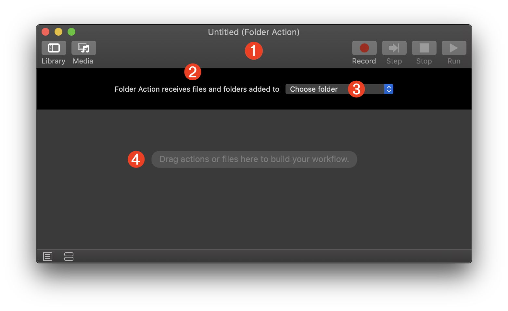
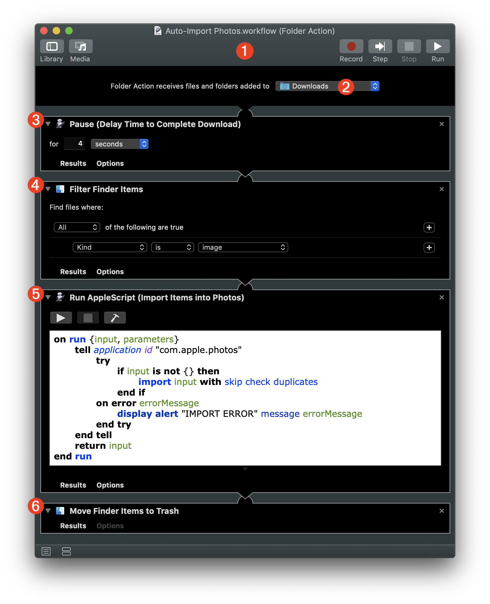
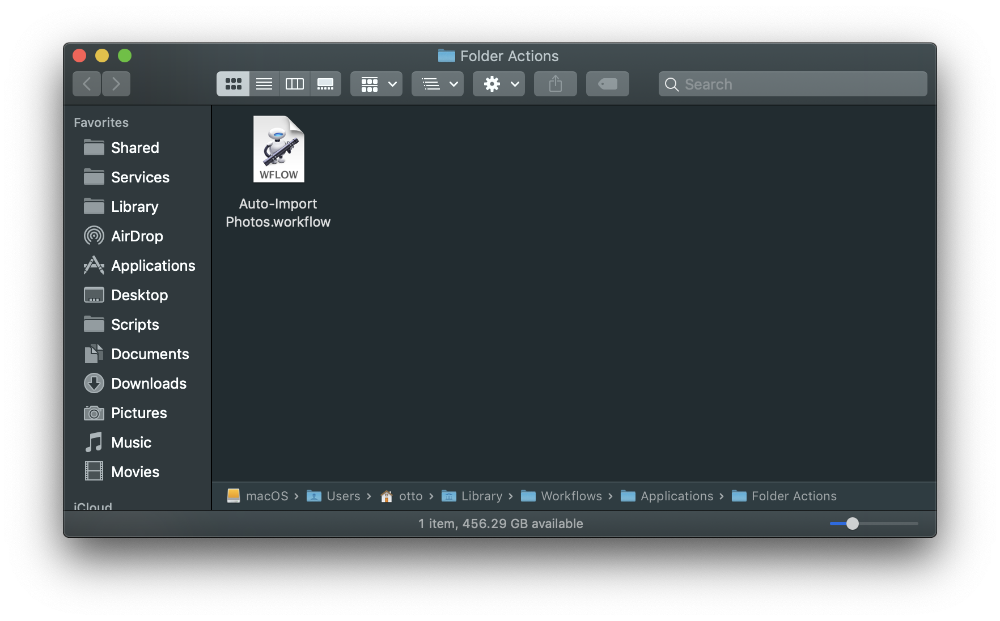
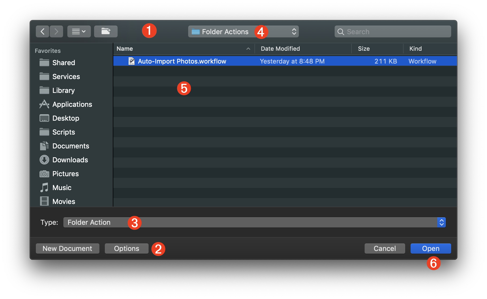
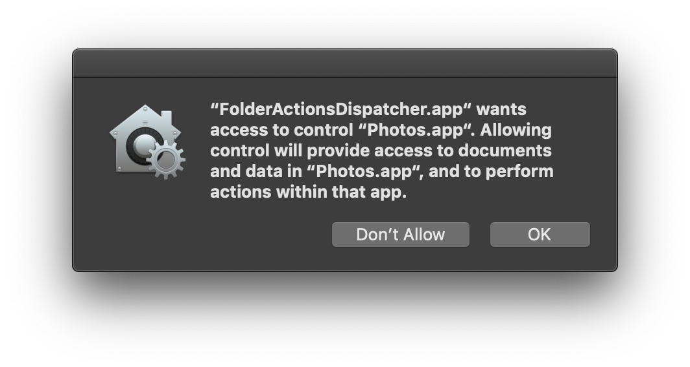
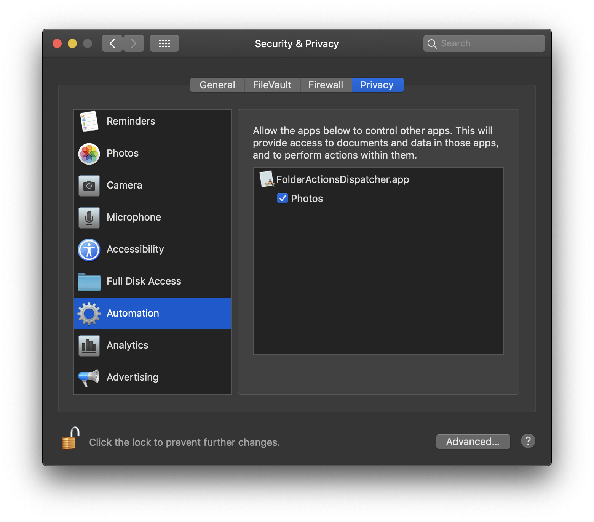

TAP TO HIDE SIDEBAR


Automator: Folder Actions
Introduced in macOS 8.5 (way back before MacOS X and the new macOS series) the Folder Actions automation architecture has delivered the functionality of automatically processing items added to designated Finder folders. This unique macOS feature is integrated into Automator as a workflow template:

1 The Folder Action workflow window. Folder Actions are saved as workflow files, instead of applets, and are executed by the system “FolderActionsDispatcher” background process.
2 Since a Folder Action is “attached” to a folder in the Finder, its input is files and/or folders added to the target folder.
3 The “attached folder” is selected from the popup menu, which summons a file/folder chooser dialog.
4 The workflow assembly pane where the workflow is assembled by adding actions from the Automator Library in the sequence in which they are to be exectued.
Example: Auto-Photos Import via AirPort
Here’s an example of combining the use of an Automator Folder Action workflow with an AppleScript “Watcher“ applet to create an autonomous AirDrop image repository whose content is added to by others through a non-attended import process triggered when users AirDrop images to the unmanned host computer.
The Folder Action
The first step is to create an Automator Folder Action workflow that will import the images placed into an “attached folder” in the Finder, into the Photos application.
DOWNLOAD the completed Folder Action workflow file.
1 The Folder Action workflow window. Folder Actions are saved as workflow files, instead of applets, and are executed by the system “FolderActionsDispatcher” background process.
2 The “attached folder” is the set to be the user’s Downloads folder in the Home directory.
3 The Pause action is added to give the items added to the attached folder, enough time to complete the copy process before beginning their processing by the other actions in the workflow. The delay value is indicated in seconds. Set this value to a higher value if the added files are larger and copied over a network or by AirDrop. Files added locally on the computer, require little or no delay.

4 The Filter Finder Items action is used to ensure that only image files are passed to the next action for import into Photos. NOTE: since Photos can store multiple media types, such as videos and images, you can adjust the filtering parameters of this action to reflect the type of import data you want the workflow to support.
5 Since Automator’s built-in Import Files into Photos action remains broken in the latest version of macOS, a Run AppleScript action is used instead, containing a simple AppleScript script (see below) that imports the passed image files into the top-level of the Photos library.
6 Since Photos stores a copy on imported data, the Move Finder Items to Trash action is used to remove the original image files from the Downloads folder, and place them into the trash.
| Import Images into Photos | ||
| 01 | on run {input, parameters} | |
| 02 | tell application id "com.apple.photos" | |
| 03 | try | |
| 04 | if input is not {} then | |
| 05 | import input with skip check duplicates | |
| 06 | end if | |
| 07 | on error errorMessage | |
| 08 | display alert "IMPORT ERROR" message errorMessage | |
| 09 | end try | |
| 10 | end tell | |
| 11 | return input | |
| 12 | end run | |
To save and install the Folder Actions workflow, type Command-S (⌘S) or choose “Save…” from the File menu in Automator. Enter a name for the workflow in the forthcoming naming sheet. Click the sheet’s “Save” button and the workflow will be installed in the following directory and the Folder Actions server will be activated.
Home > Library > Workflows > Applications > Folder Actions

To edit the workflow file, choose Open… from the File menu in Automator to summon a file chooser dialog:

1 The file chooser dialog.
2 Press the Options button to toggle the display of the Type popup menu 3
3 Select “Folder Action” from the workflow Type popup menu to reveal the contents of the system Folder Actions folder 4 in the dialog.
4 The Folder Actions folder within the system Workflows folder.
5 Select the workflow in the Folder Actions folder.
6 Press the Open button to edit the workflow in Automator.
Automation Security
Now that you’ve created and installed the Folder Action, test it by dragging an image file into the Downloads folder. Starting with macOS Mojave, workflows containing Apple Event scripts (AppleScript/JavaScript) must receive a security approval by the user the first time the hosting workflow is executed. This approval is only required once and there will be no security prompt for subsequent runs of the Folder Action workflow.
In this example, the script is executed by the FolderActionsDispatcher background system application, which will be reflected in the security approval dialog that appears after you’ve triggered the execution of the workflow by adding an image file to the “attached” Downloads folder:

Once approved by the user, the FolderActionsDispatcher application will be added to the Automation access list in the Privacy & Security system preference pane:

NOTE: if you later edit the Folder Action workflow, you may be prompted again for a security approval. See the section on Automation Security for more information.
This webpage is in the process of being developed. Any content may change and may not be accurate or complete at this time.
DISCLAIMER